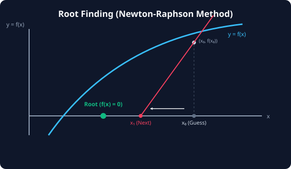

7.6.2 근 찾기 및 비선형 방정식

비선형 방정식의 해를 찾는 것은 고차원 곡선이 평면과 만나는 유일한 접점(Root)을 정교하게 관찰하고 추적해 내는 수학적 보물찾기입니다.
1. 비선형 방정식 해 찾기(Root Finding)의 개념
선형 방정식(\(2x + 3 = 0\))은 손쉽게 이항하여 풀 수 있지만, 비선형 방정식(예: \(x + \cos(x) = 0\))은 고등학교 수학 공식 대입만으로는 해를 구하는 것이 불가능에 가깝습니다.
이때 컴퓨터는 수치적 수렴 기법을 사용합니다.
- 원리: 임의의 시작점 \(x_0\)에서 출발하여, 곡선의 접선(미분계수)을 그려 가며 \(f(x) = 0\)이 되는 점으로 빠르게 미끄러져 가며 오차 범위 내의 정밀한 실수 해를 추적합니다 (대표적으로 뉴턴-랩슨법).
2. SciPy 해 찾기 도구: fsolve vs root
SciPy는 비선형 수치 해석을 위해 크게 두 가지 API를 제공합니다.
fsolve: 단일 변수 및 단순 연립 비선형 방정식의 해를 구하는 유서 깊고 직관적인 레거시 함수입니다.root: 최신 SciPy 스택의 통합 API입니다. 다차원 연립 방정식이나 복잡한 물리계 솔루션을 위해 다양한 수렴 알고리즘(hybr,lm,broyden등)을 선택해 풀 수 있어 더 유연하고 권장되는 도구입니다.
3. 🎧 Vibe Coding: 단일 및 다변수 연립 비선형 방정식 풀이
SciPy를 활용하여 단일 비선형 방정식의 해를 구하고, 이어서 두 개의 비선형 수식이 결합한 연립 방정식의 해를 구하는 실전 코드를 작성해 보겠습니다.
우리가 풀 연립 비선형 방정식은 다음과 같습니다.
\[x + y^2 = 4 \implies x + y^2 - 4 = 0\] \[x \cdot y - x = 1 \implies x \cdot y - x - 1 = 0\]🗣️ 학생 프롬프트 (AI에게 이렇게 명령해 보세요): “파이썬
scipy.optimize패키지를 사용하여 1) 단일 비선형 방정식 \(x + \cos(x) = 0\) 의 해를 구하고, 2) 연립 방정식 \(x + y^2 = 4\) 와 \(xy - x = 1\) 을 동시에 만족하는 해 [x, y]를 초기값 [1.0, 1.0]에서 시작해 찾아내는 코드를 작성해줘.”
실전 코드 작성
import numpy as np
from scipy.optimize import fsolve, root
# 1. 단일 비선형 방정식 정의: x + cos(x) = 0
def single_equation(x):
return x + np.cos(x)
# fsolve(함수, 초기값) 실행
root_single = fsolve(single_equation, x0=[0.0])
print("=== 1. 단일 비선형 방정식 해 ===")
print(f"1) 찾아낸 해 x : {root_single[0]:.6f}")
print(f"2) f(x) 대입 검증: {single_equation(root_single)[0]:.6f}\n")
# 2. 연립 비선형 방정식 정의 (변수들을 리스트로 묶어 처리)
def system_equations(vars):
x, y = vars
# f(x, y) = 0 형태의 방정식들
eq1 = x + y**2 - 4
eq2 = x*y - x - 1
return [eq1, eq2]
# root(함수, 초기값배열) 실행
result_system = root(system_equations, x0=[1.0, 1.0])
print("=== 2. 연립 비선형 방정식 해 ===")
print(f"1) 수렴 성공 여부 (Success): {result_system.success}")
print(f"2) 찾아낸 해 [x, y] : {result_system.x}")
print(f"3) f(x, y) 결과 검증 : {result_system.fun}")
[실행 결과 해석]
=== 1. 단일 비선형 방정식 해 ===
1) 찾아낸 해 x : -0.739085
2) f(x) 대입 검증: 0.000000
=== 2. 연립 비선형 방정식 해 ===
1) 수렴 성공 여부 (Success): True
2) 찾아낸 해 [x, y] : [1.63852033 1.53671071]
3) f(x, y) 결과 검증 : [1.11022302e-15 1.11022302e-15]
1) \(x = -0.739085\)를 식에 넣으면 정확히 대입 결과가 0이 됨을 알 수 있습니다. (이 값은 수학적으로 ‘dottie number’라 불립니다.) 2) 연립 방정식 결과인 \(x \approx 1.6385, y \approx 1.5367\) 역시 대입 시 오차 범위가 \(10^{-15}\) 수준으로 사실상 정확한 참해에 해당합니다. 복잡한 3D 그래픽 투영 교점이나 회로 설계 파라미터 결정 등에 이 해 찾기 엔진이 필수적으로 적용됩니다.
코딩 영단어 학습 📝
Root: 해, 근. 방정식 \(f(x) = 0\)을 만족시키는 독립 변수 \(x\)의 값을 지칭합니다.System of Equations: 연립 방정식. 여러 개의 수식이 동시에 결합하여 공통의 근을 찾아야 하는 대수 문제입니다.fsolve (Function Solve): 함수 풀이. 단일/다변수 비선형 방정식의 수치 근을 찾는 클래식 함수명입니다.Convergence (수렴): 알고리즘 반복을 통해 오차 값이 허용 한계 미만으로 좁혀져 안정된 참값으로 다가가는 정지 상태를 의미합니다.